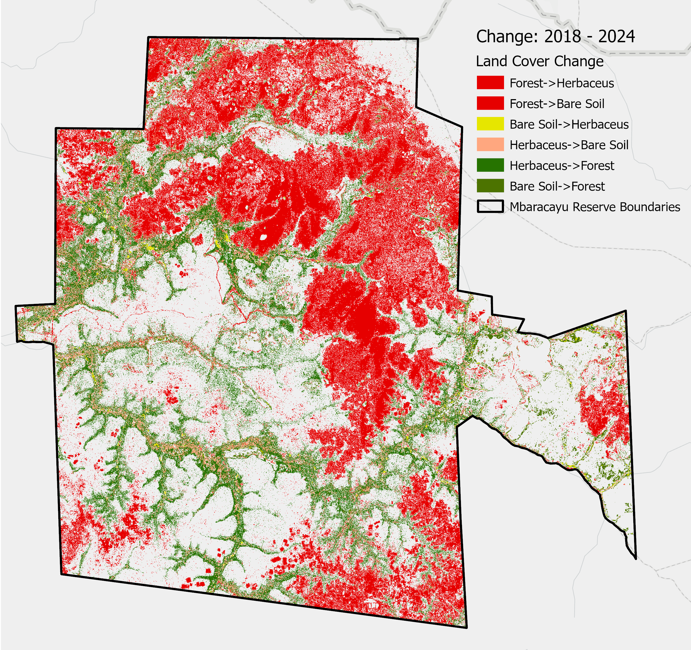

Featured Work

Machine Learning / GEE
Wildfire Risk Prediction: Paraguayan Chaco
A predictive modeling project utilizing Random Forest to estimate daily wildfire likelihood. By integrating 24 years of FIRMS data with climate and topographic variables, this tool provides a robust framework for early-warning systems.
Python Scikit-Learn Google Earth Engine
View Full Case
Study

Remote Sensing / Conservation
Mbaracayú Reserve Forest Loss Assessment
An analysis of illegal logging and wildfire impacts using Sentinel-2A multispectral data. This study quantified over 19,000 hectares of forest disturbance using NDVI and NBR indices to identify land-cover transitions.
ArcGIS Pro Remote Sensing Change Detection
Explore
Methodology

Automation / Spatial Stats
Road Accident Hotspot Analysis Tool
An automated ArcPy toolbox designed for urban safety engineering. It streamlines the identification of statistically significant (Getis-Ord Gi*) crash clusters, reducing data preparation time by 80%.
Python (ArcPy) Spatial Statistics HTML Reporting
GitHub Repository